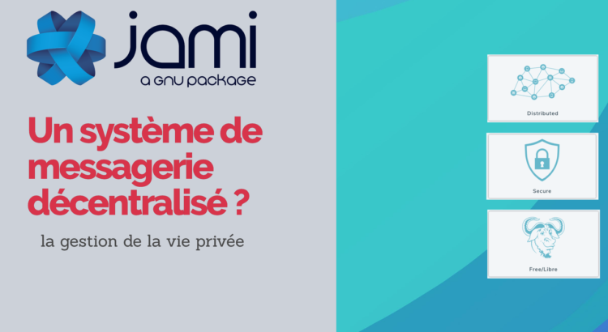
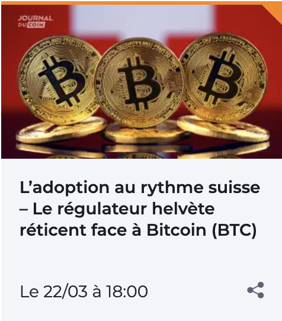
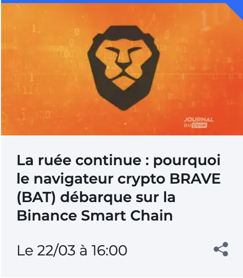
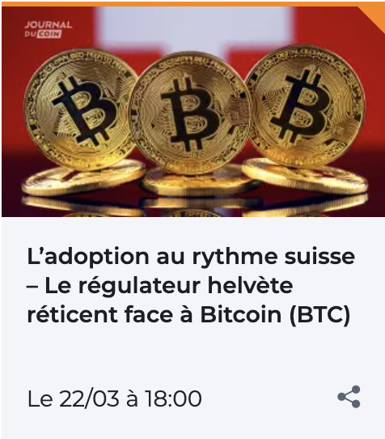
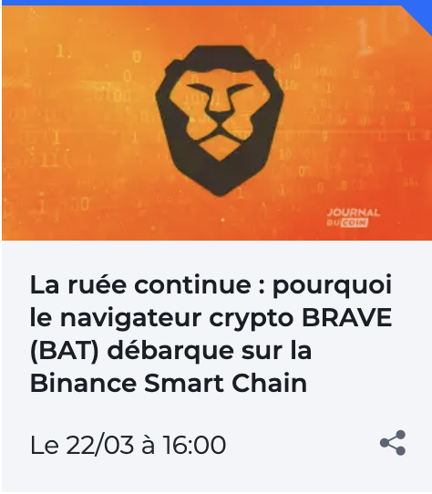

Proof of Work (POW). Pourquoi cela fait-il la puissance du réseau Bitcoin ?
Les gens sont souvent confus à propos de la “proof of work” dans le réseau Bitcoin et pourtant, il s’agit de l’une des caractéristiques de sécurité les plus importantes du protocole et donne donc à Bitcoin ses caractéristiques de valeur enviable que tout le monde lui attribue. De nos jours, Bitcoin fait également l’objet d’une grande couverture médiatique grâce à une augmentation de l’adoption, même par les acteurs institutionnels, et de nombreuses entreprises se lancent dans le minage.
POW
La proof of work consiste en un élément d’information extrêmement coûteux à obtenir mais très facile à vérifier, que le mineur doit produire pour valider son bloc candidat et que chaque nœud du réseau peut vérifier facilement et rapidement.
La procédure de preuve du travail est effectuée sur un bloc candidat qui rassemble toutes les transactions que le nœud a dans son propre mempool qu’il décide d’ajouter. Ces transactions sont vérifiées indépendamment par chaque nœud, mais ne sont pas confirmées, c’est-à-dire qu’elles ne font pas encore partie de la blockchain, car elles n’ont pas encore été insérées dans un bloc valide.
Lorsque le mineur calcule l’hash du blockheader, il considère en fait toutes les transactions présentes dans le bloc, car le merkleroot du bloc candidat résume toutes les transactions qui ont été insérées dans le bloc, parce que c’est la valeur “digest” de l’arbre de merkle.
L’arbre de merkle (merkle tree) n’est rien d’autre qu’une structure de hashs de transactions qui résume progressivement toutes les transactions qu’il a examinées, jusqu’à ce qu’il atteigne le sommet, qui est un seul hash global qui est l'”empreinte” de toutes les transactions.
La procédure de validation
Le POW est donc obtenu par une procédure par laquelle le mineur crée le hash du blockheader, de manière répétée, jusqu’à ce qu’il puisse trouver une valeur de ce hash qui soit inférieure à une valeur fixée par le protocole (target) qui peut varier grâce à un auto-ajustement tous les 2016 blocs. Dans ce cas, on parle d’une procédure de “réglage de la difficulté” qui réagit automatiquement au hashrate disponible dans le réseau en calibrant la difficulté et en s’assurant que le réseau Bitcoin produit 1 bloc toutes les 10 minutes, ni plus ni moins.
proof of work bitcoin minage
la valeur target de la difficulté actuelle
Pour pouvoir satisfaire cette valeur, le mineur, fait de nombreuses tentatives en changeant certains paramètres de l’en-tête, y compris le nonce et le extra nonce.
La récompense au mineur
Parmi les transactions présentes dans le bloc, la première est la transaction coinbase. Cette transaction permet au mineur de s’octroyer la récompense pour avoir exploité le bloc selon la valeur établie par les règles du protocole.
Les frais des transactions insérées font également partie de la récompense du mineur. C’est pourquoi le mineur est incité à ajouter autant de transactions que possible, en commençant par celles dont les frais sont les plus élevés. Toutefois, les règles du protocole autorisent encore des blocs comportant très peu de transactions.
Une fois cela fait, le bloc est propagé au réseau et tous les autres nœuds vérifient le respect du protocole, puis vérifient le bloc. Si le bloc est vérifié, il devient le TIP, c’est-à-dire le bloc le plus élevé.
Si le bloc avait une récompense différente, qui n’est pas compatible avec la valeur actuelle autorisée par le protocole, il serait ici rejeté par les autres nœuds et le mineur n’aurait aucune récompense. Cet événement s’inscrit dans le cadre du mécanisme d’avantage/punition du système d’incitation économique de Bitcoin.
J’espère avoir été utile pour comprendre le fonctionnement du mécanisme de validation des transactions du réseau Bitcoin. Si vous avez des questions, vous pouvez poster un commentaire et me contacter, je resterai disponible. Je suis également heureux si vous souhaitez me joindre sur mon site web ou sur mon linkedin.

Aujourd’hui, je veux parler d’un système de messagerie à source ouverte qui est vraiment différent des autres alternatives disponibles telles que whatsapp, telegram, signal et tous les dérivés de signal. On en parle beaucoup ces derniers temps à cause du changement de politique de whatsapp et beaucoup de gens sont allés ailleurs, notamment vers le telegram et signal. Mais en réalité, ces applications alternatives à whatsapp constituent une amélioration de votre vie privée ?
Signal?
Par exemple, si l’on considère signal, il est opensource et le dépôt est sur github. Cela semble être une excellente alternative à whatsapp, mais …. Si vous allez examiner les exigences à l’url https://github.com/aqnouch/Signal-Setup-Guide vous verrez la liste suivante (au moment où j’écris cet article) des systèmes et logiciels nécessaires à l’installation d’un serveur. Je parle du serveur parce que c’est le serveur qui détermine la gestion des comptes et des métadonnées et qui est responsable gérer les données:
Requirements (signal)
Twilio (pour les SMS OTP)
Amazon S3 (pour Avatar et pièces jointes, peut être sous-titré avec MinIO)
Amazon SQS (pour la file d’attente CDS, peut être remplacée par LocalStack)
Firebase (pour les notifications “push”)
Comme vous pouvez le voir, signal utilise des services externes pour fonctionner, dont amazon. Ces exigences sont en fait des conditions préalables nécessaires à remplir, au niveau de l’installation du serveur, pour qu’il fonctionne correctement. C’est-à-dire ce qui doit être mis en place pour rendre l’installation possible et fonctionner. Donc, pour ne pas utiliser whatsapp à cause de l’attaque contre la vie privée, nous sommes confrontés à une alternative qui, bien qu’étant open source, dépend d’autres services de grandes entreprises et nous sommes alors revenus à la case départ. Si notre communication passe par des outils qui appartiennent ou sont gérés par d’autres entreprises, nous aurons en quelque sorte une interférence de ces entreprises sur nos données.
Telegram?
Que peut-on dire sur telegram ? Pouvons-nous voir le code des serveurs de telegram (j’ai mentionné le serveur, qui est l’unité qui gère les connexions et trie les communications) ? Est-il dans le domaine public ? Non. Pourquoi pas ? On ne le sait pas. Le fait que nous ne puissions pas connaître le code source du serveur, ni la structure avec laquelle il est constitué, les librairies qu’il utilise et la façon dont il gère les données, est un problème important pour notre vie privée.
La chose que on sait sur telegram est d’envoyer vos messages cryptés à quelque truc. Comme vous n’avez pas le code source, vous ne savez pas exactement ce qui est fait sur ce serveur avec vos données. Il n’est donc pas très logique de recommander telegram comme solution pour améliorer la confidentialité de vos communications textuelles. En fin de compte, nous sommes toujours dans un domaine invérifiable et non transparent.
Jami!
Il nous faut donc une alternative qui soit réellement décentralisée et qui n’ait pas d’impact sur notre vie privée. Une véritable alternative est jami. Un logiciel que j’ai pu essayer et analyser pendant quelques semaine de test et j’ai pu voir à quel point il est vraiment bon de protéger notre vie privée et de ne pas laisser nos métadonnées sur des serveurs tiers.
jami est un logiciel open source, décentralisé et peer2peer. Qu’est-ce que cela signifie ? c’est-à-dire qu’il n’utilise pas de serveur central et que la communication se fait en fait entre les deux pairs avec un cryptage de bout en bout. il n’utilise pas non plus de serveur central qui peut ensuite surveiller les métadonnées.
Nos métadonnées
Qu’est-ce que les métadonnées ? Les métadonnées sont toutes les informations entourant une communication, telles que 1) la date à laquelle la communication a eu lieu, 2) l’identité des parties connectées à la communication, 3) la durée de la communication, etc. Des informations extrêmement importantes que les services centralisés utiliseront tôt ou tard pour gagner de l’argent grâce à votre vie privée. Ces métadonnées fournissent un profil précis de votre situation, de vos comportements et même de vos connaissances. Ils sont donc très utiles pour construire votre alter-ego numérique.
Avec jami, nous allons résoudre le problème à la source, en empêchant la collecte et le stockage des métadonnées, grâce à la décentralisation que le système permet. En fait, nous n’avons que deux terminaux qui communiquent et toutes les données (métadonnées) de communication sont stockées localement.
Les clés cryptographiques
Rien ne réside sur un serveur ou un tiers. Nous sommes seuls responsables de la communication et de nos données et toute communication est cryptée avec des clés qui n’appartiennent qu’à nous. Comme toujours, lorsque nous sommes les propriétaires exclusifs des clés cryptographiques, nous sommes propriétaires du contenu que nous échangeons avec l’autre partie. La décentralisation permet également d’éviter les points intermédiaires où les métadonnées peuvent être surveillées.
jami n’a pas besoin d’un serveur central et votre compte n’est donc stocké que localement. lorsque vous voulez utiliser votre compte, vous n’avez pas besoin de vous connecter à un service et vous ne devez fournir aucune donnée ou numéro de téléphone à qui que ce soit, ni même un courriel. Jami n’a donc pas besoin de s’enregistrer et n’a pas besoin de numéros de référence pour fonctionner.
Le mot de passe que vous indiquez au démarrage de Jami est utilisé uniquement pour crypter les données localement sur votre appareil. Les messages sont cryptés avec une clé RSA.
jami est disponible pour windows, linux, android, ios et est facile à installer. Le logiciel est disponible à l’adresse https://jami.net/ où vous pouvez également trouver des informations sur l’installation qui, comme mentionné, est très simple. Vous trouverez également un accès au dépôt de code source qui est ouvert.
J’espère avoir fourni des informations et des ressources à forte valeur ajoutée et avoir été utile. Si vous le souhaitez, vous pouvez me contacter pour toute question ou précision concernant mon profil sur linkedin ou vous pouvez me contacter et me suivre et soutenir sur patreon avec des conseils et du contenu exclusif.


 


